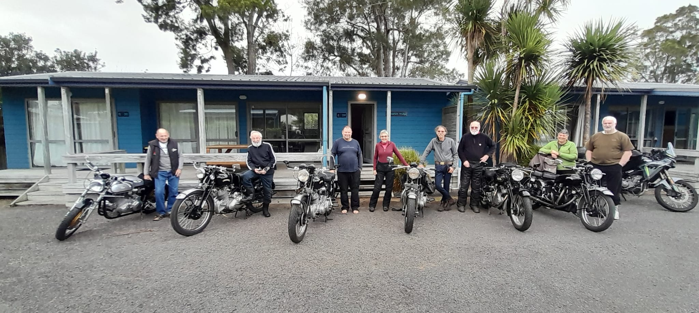
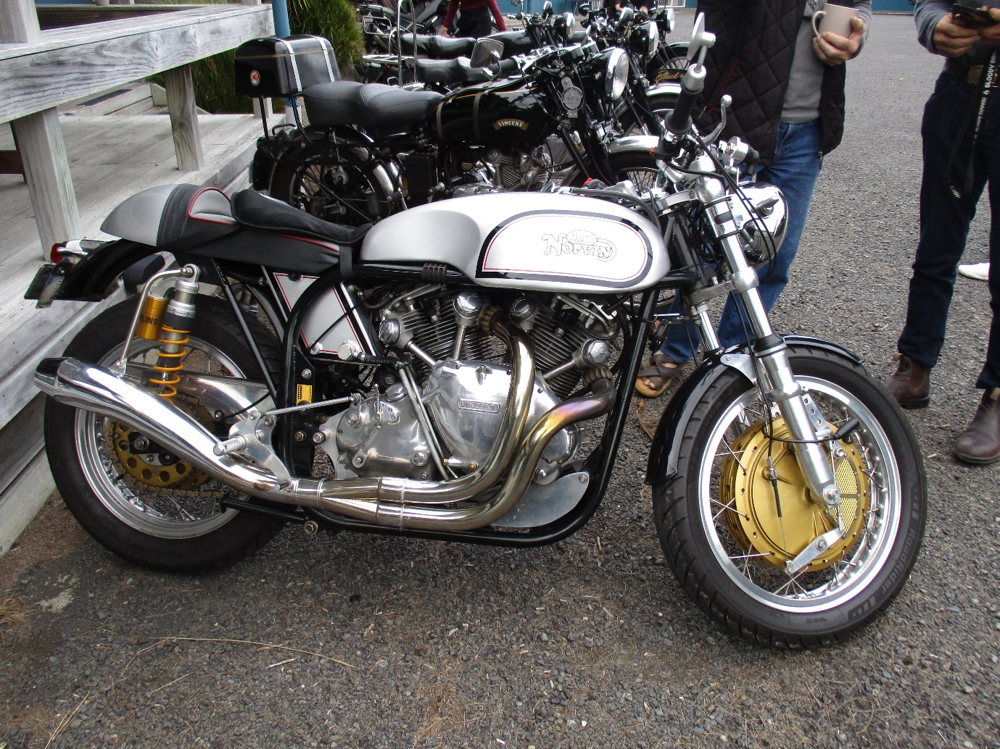

VINCENT PAPER PLATE RUN
COROMANDEL TOWN SEPTEMBER 2026
The temptation to sample some of the great Coromandel Peninsula roads lured a few Vincents out of winter hibernation. From Whakatane I took a touring route over the Rotoma’s, past the Rotorua lakes, around the back of Lake Rotorua through Hamurana, and over the Mamaku’s, conveniently bypassing the hustle and bustle of both Rotorua and Tauranga.
The back road to Te Aroha skirts the western side of the Kaimai Ranges, always a pleasant ride under dry but quite cool conditions. Straight across SH2 at Paeroa through Hikutaia it was nice to remain on relatively traffic free secondary roads.
Added bonus – not a single traffic light !
I had agreed to rendezvous with Team Hackett in Thames for lunch at around noon. On entering the town at just on 1 minute to 12 I spied a couple of familiar hi vz clad riders just ahead. How’s that for coordination I thought.
We spied the Shannon Rapide in town. Had lunch together before venturing north along the great bike road up the coast of the Firth of Thames. Plenty of corners, scenic views out over the Firth, and little traffic. All good.
On entering Coromandel we looked for the hotel which we were told was opposite our accommodation at the Tasman Holiday Park. We found various hotels before we got the right one, but consequently had a good tour of the town.
The Tasman Holiday Park proved an ideal choice with clean and spacious units tucked out of the way at the back of the park.
The Coromandel Hotel across the street was very busy with a full crowd to watch a Warriors game on the big screens. The kitchen was obviously flat out, with some meals taking a long time to arrive, but hey, we weren’t going anywhere !

L to R:- Trevor Hackett, Neil “Barny” Barnard, Rick Hackett, Beate Stelzer, Ivan Shannon, Tim Stelzer, Chris Hewlett, Marty Hewlett. Photo Josie Tear.
Run attendees were:-
The Sunday morning skies looked a little threatening and wet gear looked like the sensible option. Most were heading back down the way we had come, but Team Hackett and I decided to do “the loop” to cross over and head down the picturesque east coast via Whitianga, Coroglen with a stop in Tairua for lunch. Another very joyous ride along a lovely piece of classic NZ coastline.
Rather than continue further down to Whangamata we then cut back across to Kopu. Hacketts headed back up the western side of the Firth towards Auckland. Having now had a full complement of twisty roads I did the Paeroa, Waihi, Tauranga SH2 main road back home to Whakatane. For me the weather got rather unsettled in places, with several rain showers. Fortunately they were only brief and not too heavy.

Beast at rest. Trevor Hackett’s superb Norvin. Pure poetry. Photo “Barny”.
After an enjoyable 390 mile (620k) 2 day ride it was great to look back and appreciate the legacy that Phil Vincent left behind for us to enjoy. Considering the combined age of my bike and rider is now in excess of 150 years, the fact that the Comet did not need any attention is appreciated. The tool kit remained closed, and there was never a “back up” in sight. Good stuff !
Thanks to Beate and Tim for putting “the stake in the ground” and organising this event.
Neil “Barny” Barnard.